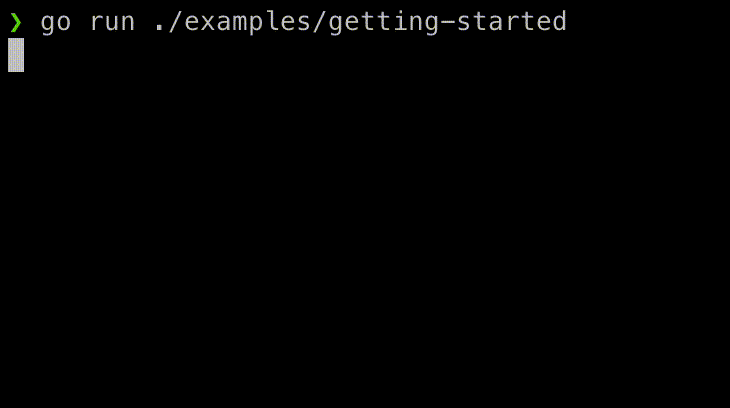

Getting Started

Let's walk though a quick example to get started with golist. In our example, we'll be using golist to track our progress through the steps required for us to write a novel.
Create a List
Start off by creating a List:
l := golist.NewList()
The NewList function will create a list with some sensible defaults. You can then change the parameters or create a new List from scratch.
For starters, the key parameters of the List are:
Writer: Anio.Writertelling theListwhere to send it's output. This will most-likely beos.StdoutDelay: An instance oftime.Durationtelling theListhow often to print an update of the list statusStatusIndicator: A map ofTaskStatusestoIndicatorstelling theListwhat spinner or icon to use when displaying the list status
Our default list will print to stdout every 100 milliseconds, and use the default status indicator.
Now that we've created a list, we can start to add some Tasks!
Adding a Task
Like the List, Tasks can be created from scratch or with a factory function, NewTask. We'll start with the factory function:
l.AddTask(golist.NewTask("Get a pen", func(c golist.TaskContext) error {
// Write code here to "get a pen"...
time.Sleep(time.Second)
// It worked! No error to return.
return nil
}))
The two key properties of a task are the Message and the Action. The Message is the text displayed as our list runs. The Action is the code to executed when the Task is run.
In our example, the Message for the first step in writing our novel is to "Get a pen".
The Action function takes a TaskContext as an argument and returns an error. We'll come back to the TaskContext later, but it's a way for the Action function to interface with its Task (you can read more about it here).
When the Action function is completed, if it returns a non-nil-error, the Task will be marked as failed, otherwise, it will be marked as successfully completed.
Adding Groups of Tasks
Now let's add a few more Tasks to our List, grouped together in TaskGroups.
A TaskGroup is a nested collection of Tasks or other TaskGroups. We can create TaskGroups, again, either from scratch or with a factory function. The factory function takes a Message and a slice of TaskRunners as arguments.
TaskRunner is an interface that's implemented by both Tasks and TaskGroups (read more here).
l.AddTask(golist.NewTaskGroup("Get some paper", []golist.TaskRunner{
golist.NewTaskGroup("Drive to the store", []golist.TaskRunner{
golist.NewTask("Leave the driveway", doSomething),
golist.NewTask("Make some turns", doSomething),
golist.NewTask("Enter the store's parking lot", doSomething),
}),
golist.NewTask("Get a box of paper", doSomething),
}))
Here we're adding a group of tasks ("Get some paper") with two sub-tasks.
The first ("Drive to the store") is also a TaskGroup with three of its own subtasks ("Leave the driveway", "Make some turns", and "Enter the store's parking lot").
The second is a regular Task ("Get a box of paper").
Running the List
Great! Now our novel is almost written!
Let's add one final task...
l.AddTask(golist.NewTask("Write a novel", func(c golist.TaskContext) error {
time.Sleep(time.Second)
return nil
}))
That was easy enough! Writing novel's doesn't seem so hard after all!
The final step is to run our list. Here's one way to do that:
l.RunAndWait()
That function will start to display the list, run the tasks in our list, wait for them to complete, and then stop updating the list.
Alternatively, if we wanted to have a little more control over it, those steps are also split out into separate functions.
Startstarts to print out theListRunstarts running the tasks in theListand waits for them to completeStopfinishes printing out theList's task statuses
Most of the time, it's more convenient to just run RunAndWait but if you want to perform some actions in between starting to display the List and running the Tasks (or after the Tasks have completed but before printing stops), the option is there.
If you want to see what that code looks like, there's a GIF of it at the top of this page.
But wait, there's more! That's the end of this quick-start but there are more fun features of golist so keep reading on...